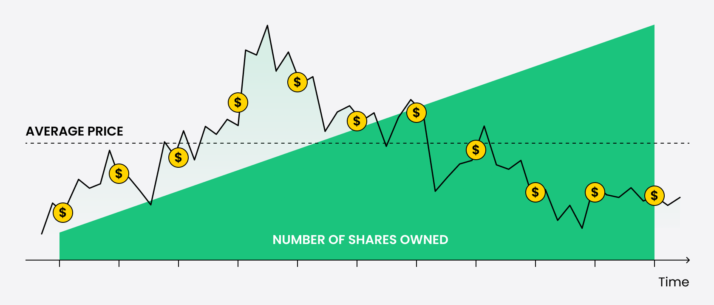
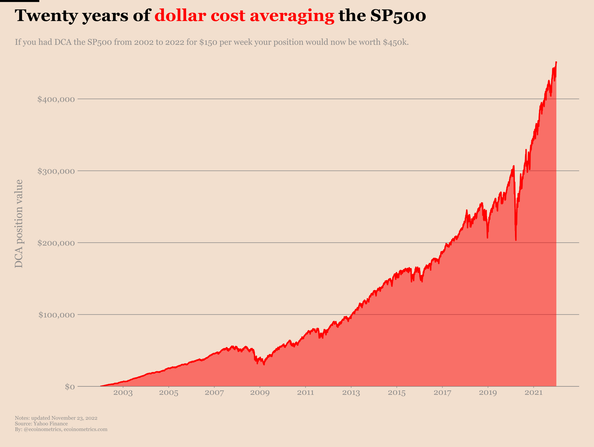
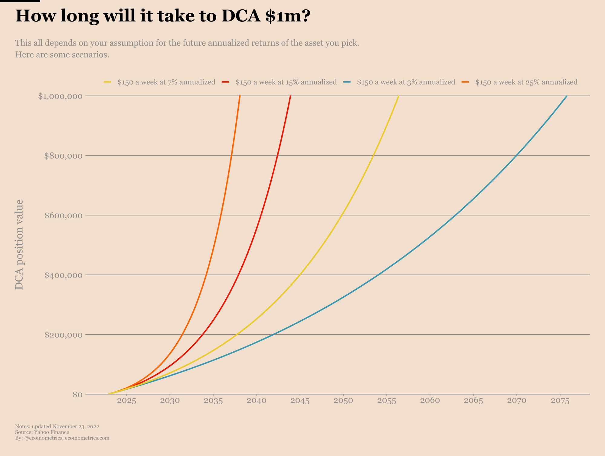
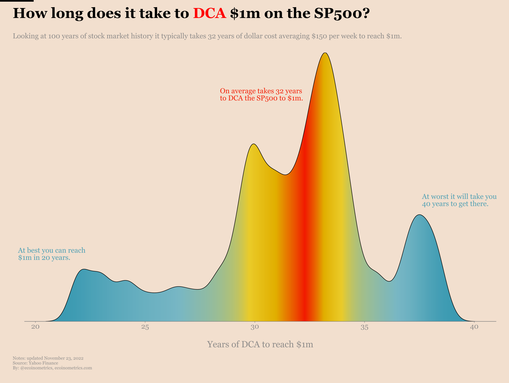
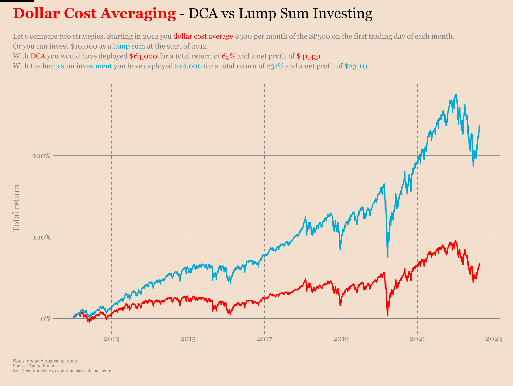
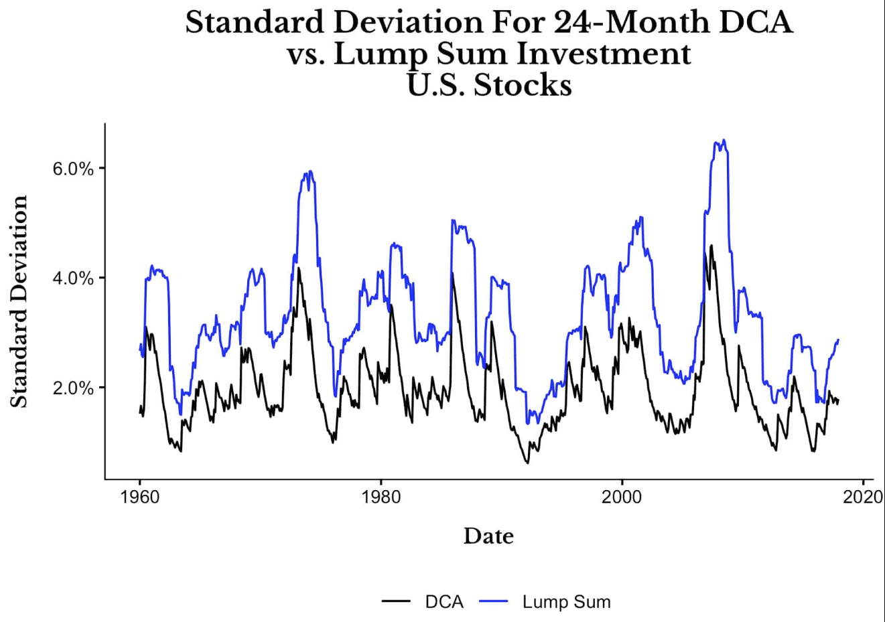

Une fois que vous avez établi votre liste de convictions (Module 5), défini la structure de votre portefeuille (Chapitres 6.1 à 6.6), et organisé votre poche de liquidités (Chapitre 6.7), une question fondamentale de "déploiement tactique" se pose inévitablement. Comment concrètement injecter votre capital sur le marché ?
Faut-il investir la totalité de votre argent dès maintenant pour profiter immédiatement de la hausse structurelle des marchés ? Faut-il y aller progressivement, mois par mois, pour lisser les risques de volatilité à court terme ? Et que faire face à la tentation, souvent paralysante, d'attendre une crise pour acheter "au plus bas" ? L'industrie financière a théorisé ces approches à travers deux grandes méthodologies antagonistes : le DCA (Dollar Cost Averaging) et le Lump Sum Investing (LSI). Dans ce chapitre, nous allons analyser froidement les mathématiques, les statistiques historiques et la psychologie derrière ces méthodes pour déterminer la meilleure stratégie pour un investisseur Quality.
1. Le DCA (Dollar Cost Averaging) : La force tranquille de la discipline comportementale
Le DCA, ou l'investissement programmé, est incontestablement la stratégie la plus connue, la plus promue par les banquiers et la plus adaptée à la psychologie de l'investisseur particulier débutant. Le principe est d'une simplicité désarmante, mais d'une efficacité redoutable : investir une somme d'argent fixe, à intervalles réguliers et prédéfinis (généralement tous les mois), indépendamment des conditions de marché, que la bourse monte ou qu'elle s'effondre.

Le DCA n'est pas seulement une méthode mathématique d'optimisation du PRU ; c'est avant tout un outil de gestion comportementale d'une puissance inouïe. Il offre trois avantages majeurs :
- L'automatisation émotionnelle absolue : En configurant un virement automatique chaque mois (par exemple le lendemain de la réception de votre salaire), vous débranchez totalement vos émotions. Vous n'avez plus à vous poser la question quotidienne de savoir si le marché est "trop haut", "trop cher" ou "sur le point de kracher". Le DCA transforme l'investissement en une routine disciplinée, presque ennuyeuse, ce qui est une excellente chose en finance.
- La création d'une habitude d'épargne inébranlable : C'est la méthode reine pour bâtir une discipline financière. Elle oblige l'investisseur à se "payer en premier" et à allouer une part fixe de ses revenus à la construction de son patrimoine, forgeant ainsi une habitude qui vaut de l'or sur le long terme.
- La réduction drastique du stress psychologique : Si le marché s'effondre le lendemain de votre investissement, vous ne paniquez pas. Au contraire, vous vous réjouissez, car vous savez que votre investissement du mois suivant vous permettra d'acheter des actions d'excellentes entreprises à prix bradé. Le DCA est incontestablement la méthode la plus "safe" mentalement pour supporter la volatilité.

Cependant, pour être totalement pro, il faut acter une limite fondamentale : le DCA est un processus intrinsèquement lent, un marathon qui s'étale sur des décennies. Ce n'est pas une stratégie spéculative pour devenir riche rapidement. C'est un rouleau compresseur qui met des années avant que la force des intérêts composés ne surpasse réellement l'intensité de votre apport mensuel.
2. Les deux variables clés qui dictent la vitesse de votre DCA
Puisque le DCA repose sur la récurrence, le temps qu'il vous faudra pour atteindre vos objectifs financiers ambitieux (comme le seuil symbolique du million d'euros) dépendra de deux facteurs dont vous avez le contrôle total.
La première variable est, bien entendu, le rendement moyen de vos actions. Nous optimisons ce facteur en ciblant l'excellence (Quality Investing) pour maximiser la croissance composée, comme le montrent les simulations suivantes :

Mais la variable la plus importante lors des premières années d'investissement, bien plus que le rendement, est le montant de votre apport périodique.

Logiquement, si votre objectif est d'accélérer drastiquement votre création de richesse en bourse, votre focus absolu ne doit pas être de trouver l'action spéculative de l'année, mais d'améliorer vos revenus actifs (votre salaire, votre entreprise) pour augmenter massivement votre capacité de DCA mensuelle.
3. Le Lump Sum (LSI) : La suprématie mathématique incontestée
Le Lump Sum Investing consiste à investir l'intégralité d'un capital disponible en une seule fois, d'un seul coup, sans lissage ni fractionnement. Si vous disposez de 10 000 € sur votre compte épargne aujourd'hui, vous achetez pour 10 000 € d'actions demain matin à l'ouverture du marché.
Bien que cette méthode soit souvent terrifiante pour les débutants, la science financière et les statistiques historiques sont catégoriques : le Lump Sum est mathématiquement supérieur au DCA dans la majorité des cas.

Pourquoi le Lump Sum gagne-t-il si souvent ? L'explication est basique : les marchés boursiers mondiaux ont une tendance haussière structurelle à long terme (ils montent environ 3 années sur 4). En conservant votre argent sur un compte courant pour l'investir progressivement via le DCA, vous laissez une partie de votre capital hors du marché. Or, pendant ce temps, les entreprises exceptionnelles que vous visez génèrent des bénéfices, versent des dividendes et leur cours de bourse monte. L'argent qui n'est pas investi immédiatement subit un coût d'opportunité majeur, car il rate la puissance de la croissance composée immédiate. C'est l'adage fondamental de la finance : "Time in the market beats timing the market" (Le temps passé investi bat la tentative de deviner le timing).

La contrepartie du Lump Sum, c'est sa brutalité psychologique (illustrée par sa volatilité sur le graphique ci-dessus). Si vous investissez 100 000 € aujourd'hui et que le marché subit un krach de -20 % le mois suivant, vous encaissez une perte latente immédiate de 20 000 €. Très peu d'investisseurs ont le système nerveux nécessaire pour supporter ce choc sans revendre dans la panique, actant ainsi une perte réelle.
4. L'inefficacité dramatique du "Buy the Dip" pure
Il existe une troisième voie, souvent plébiscitée par les amateurs pensant être plus intelligents que les marchés : le Buy the Dip (acheter les creux). Cette stratégie consiste à conserver volontairement la majorité de son capital en cash, en refusant d'investir tant que le marché n'a pas subi une grosse chute (un "krach" ou un "dip"), pour acheter au plus bas.
C'est une hérésie financière absolue, une perte de temps et d'argent. L'inefficacité du "Buy the Dip" s'explique par deux phénomènes implacables :
- Garder du cash est très mauvais : Nous l'avons prouvé au chapitre précédent (6.7), le cash est un très mauvais actif qui se fait ronger par l'inflation. En attendant un krach qui peut mettre 5 ans à arriver, votre cash perd de son pouvoir d'achat réel.
- Le coût d'opportunité des "Meilleurs Jours" : Le marché est imprévisible. Pendant que vous attendez une chute de -20 %, le marché peut prendre +80 %. Lorsqu'un krach de -20 % finit par arriver, vous achèterez en réalité beaucoup plus haut que le prix auquel vous auriez pu acheter des années plus tôt. Comme vu au Chapitre 3.8, ce qui génère la performance, c'est rester investi pour ne pas rater les quelques jours de hausse fulgurante qui perfusent l'intégralité du rendement composé à long terme.
5. Le compromis psychologique : Le "Tranching" pour les gros capitaux
Si le DCA classique est fait pour un flux de revenu mensuel (votre salaire), que faire si vous recevez soudainement une grosse somme d'argent (une prime exceptionnelle, la vente d'un bien immobilier, un héritage, une donation) ?
Le Lump Sum est mathématiquement vainqueur, mais émotionnellement trop risqué pour un investisseur qui n'a pas encore l'expérience des krachs. La solution hybride des gestionnaires de fortune s'appelle le Tranching (ou le Fractionnement tactique). Cela consiste à prendre votre gros capital et à le diviser en plusieurs tranches égales (par exemple 4, 6 ou 10 tranches) que vous déploierez mécaniquement sur les mois suivants.
Si vous recevez 60 000 €, vous pouvez investir 10 000 € par mois pendant 6 mois. Cela vous garantit d'être totalement investi rapidement pour capter la hausse des marchés, tout en lissant le risque psychologique d'un krach imminent. C'est l'assurance comportementale parfaite pour intégrer un capital massif sur les marchés.
6. La Stratégie StocksPickeur : Le DCA Tactique et Sélectif
Dans les faits, opposer fermement le DCA au Lump Sum n'a de sens que si vous achetez des ETFs indiciels mondiaux de manière aveugle. Dans notre méthodologie de *Quality Investing*, où nous sélectionnons des monopoles mondiaux spécifiques, la nuance est notre meilleure arme.
Ma méthodologie personnelle StocksPickeur :
- Je pratique une discipline d'épargne inébranlable en épargnant une somme fixe chaque mois issue de mes revenus (la mécanique disciplinée du DCA).
- Cependant, je n'investis pas cet argent à l'aveugle. J'utilise mon cash accumulé pour cibler très précisément les entreprises de ma liste de convictions (mes 6 à 10 champions) dont la valorisation est temporairement attrayante, correcte ou raisonnable ce mois-là.
- Si toutes mes entreprises sont massivement surévaluées, je n'achète rien. Je laisse cet apport mensuel s'accumuler dans ma poche de Dry Powder (mon cash offensif, Chapitre 6.7).
- Lorsqu'une opportunité se présente (un vrai "Dip" sur une entreprise spécifique de haute qualité qui subit une correction irrationnelle), j'opère alors un mini "Lump Sum" : je déploie agressivement mon cash accumulé sur cette action précise pour profiter des soldes de l'excellence.
Cette approche hybride combine la discipline d'épargne inébranlable du DCA avec l'agressivité mathématique du Lump Sum et l'intelligence de valorisation du Value Investing.
🔑 Ce qu'il faut retenir
Le DCA (investissement régulier) est la méthode ultime pour bâtir une habitude de fer, débrancher ses émotions et supporter la volatilité à long terme.
Le Lump Sum (tout investir d'un coup) offre mathématiquement un rendement supérieur dans près de 70% des cas, car il profite immédiatement de l'intégralité du temps passé investi sur le marché.
Le "Buy the Dip" pur est inefficace. La méthode StocksPickeur consiste à épargner mensuellement (DCA) pour accumuler du cash offensif, que l'on déploie tactiquement (Lump Sum ciblé) lors d'opportunités de valorisation intéressantes sur nos entreprises Quality.